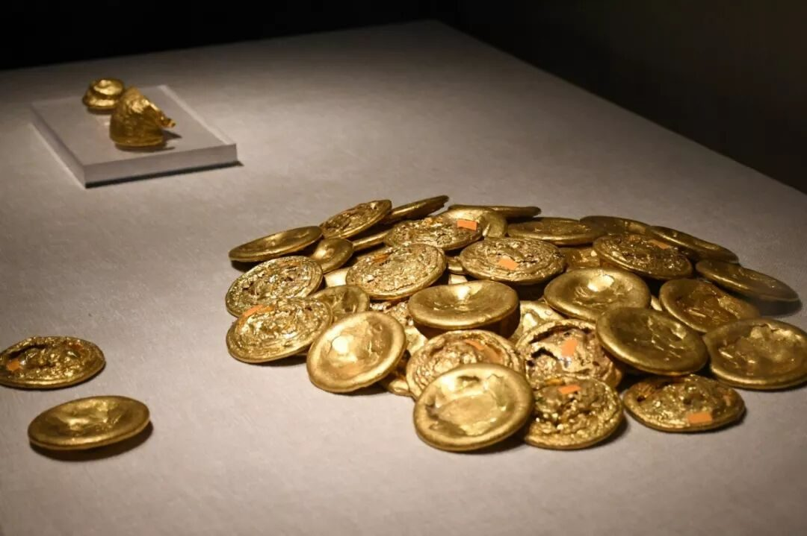
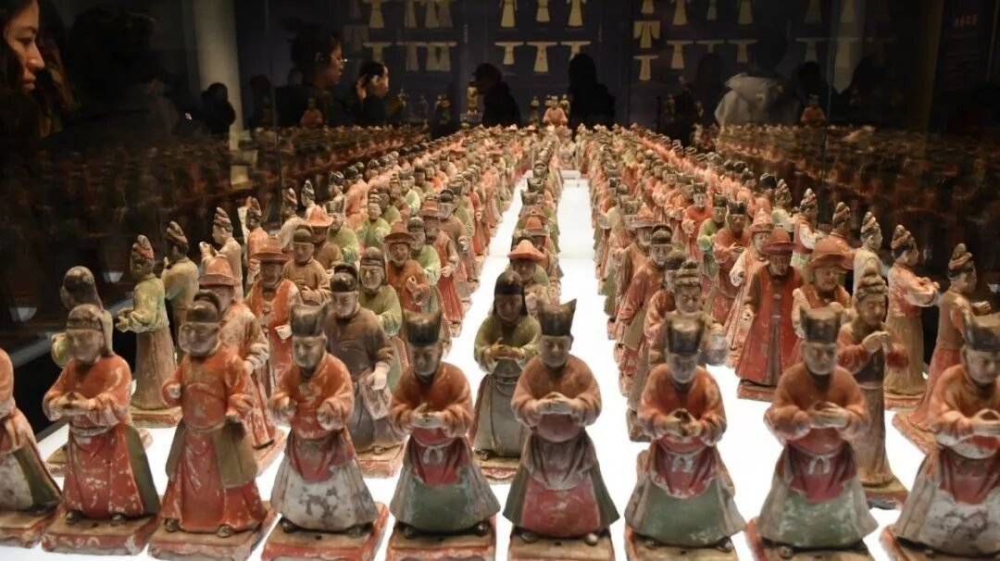

【行者无疆·韶忆长安】 首日小计
咸阳
李商隐
咸阳宫阙郁嵯峨，六国楼台艳绮罗。
自是当时天帝醉，不关秦地有山河。
黄土高原的苍莽豪迈，关中平原的广阔坦荡和秦巴山区的巍峨雄起，共同成就了千古帝王州－陕西。地处中国腹地、黄河中游，给予陕西山川壮美，人文荟萃的独特优势。
历经一日夜的奔波，行者终抵达陕西西安，高大的城墙成为行者对于这座城市的第一印象，这是历史的遗存与馈赠，也是我们最想要了解的地方，百余份问卷在城墙脚下散发又回收，或许我们已经得到了我们想要的答案。
百年风雨，历经沧桑，但我们仍希望你能保有最好的模样。
人世变换，今古皆然。站在展柜前，眼中看到的是当前景色，心中却幻想起千百年前的光景......
没有文字记载之前的人类文明，我们究竟与怎样的宝藏失之交臂?尖底瓶的智慧，人面鱼纹盆的深情，失却了的历史终难再追寻。从无到有的创造已不是咂舌可以形容。倘若今日与君土三斗，君可为我造物否？
无礼不乐，赫赫宗周；鸣钟列鼎，悠悠汉唐。岁月辗转，名将贤士归宿于黄土，尊荣与罪罚被时间收缴，仅余不曾被风化的古物，成为历史的佐证。虽不曾亲眼见其生，观其物，解其人，大抵就是博物馆的魅力吧。


图片丨王一岚 丛雨晴
文字丨潘雯雯
责编丨邓子孚
审核丨邓子孚 潘雯雯
行者无疆实践团
QQ：2758025831

随行者一起认识世界
长按二维码关注